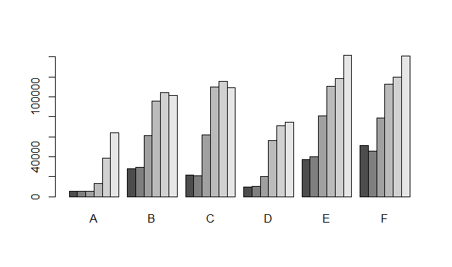
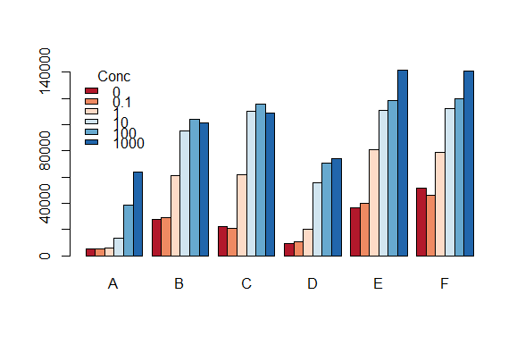

Chapter 5 R graphics basics
이번 시간에는 R에서 제공하는 기본 그래프 함수들을 간략하게 알아보고 지난 강의에서 간략하게 실습했던 multiple plate reader (\(Victor^{TM}\), PerkinElmer, Inc.) 장비를 통해 측정된 데이터를 읽어와서 분석하기 위한 함수를 작성해 보겠습니다.
5.1 scatter plot
R에서 plot 함수는 가장 기본이 되는 그래프 함수 입니다. 아래는 산포도를 그려주는 코드로서 myxy가 두 개의 변수(x1과 y1)를 가지고 있으므로 아래 명령들은 모두 같은 그림을 그려주게 됩니다. 가장 마지막 명령은 formula를 사용한 plot으로 첫번째 파라메터 인자로 formula 타입이 전달되면 plot.formula 함수가 실행되며 x, y 값이 전달될 경우 plot.default 함수가 수행됩니다. R에서는 이렇게 전달되는 파라메터의 타입에 따라서 다른 기능을 하는 함수를 Generic function 이라고 합니다. 만약 기존 그림에 추가 데이터의 산포를 그리고 싶은 경우 points라는 함수를 사용합니다.
5.2 histogram
hist 함수는 데이터들의 분포를 히스토그램으로 그려주는 함수입니다. 히스토그램은 데이터들이 갖는 값을 특정 구간으로 나누고 각 구간에 해당하는 데이터가 몇 개인지 빈도수를 계산하여 막대그래프로 보여줍니다.
5.3 boxplot
boxplot은 데이터의 여러가지 대표값 (중간값 median, 첫번째 사분위수 1st quantile, 세번째 사분위수 3rd quantile, 최소 minimum, 최대값 maximum) 등을 한눈에 볼 수 있도록 만들어놓은 그래프 입니다.
data.frame 타입의 오브젝트에 대해서 boxplot을 그릴 경우 여러 변수의 데이터들의 분포를 한눈에 비교할 수 있읍니다.
5.4 barplot
막대그래프는 기존 수업에서도 실습을 진행한 그래프로 각 값들을 막대 형태로 나란히 배치하여 서로 비교가 용이하도록 만든 그래프 입니다. table 함수는 같은 값을 갖는 데이터들이 몇 개나 있는지 테이블을 만들어주는 함수 입니다. rbind는 두 변수를 row를 기준으로 붙여주는 역할의 함수입니다.
x <- sample(1:12, 200, replace = T)
tab_x <- table(x)
y <- sample(1:12, 200, replace = T)
tab_y <- table(y)
tab_xy <- rbind(tab_x, tab_y)
#barplot(tab_xy)
#barplot(tab_xy, beside = T)
#barplot(tab_xy, beside = T, col=c("darkblue","red"))
barplot(tab_xy, beside = T, col=c("darkblue","red"), xlab="Month")
barplot(tab_xy, beside = T, col=c("darkblue","red"), xlab="Month", horiz=TRUE)5.4.1 Exercise 5-1
iris데이터의 꽃받침 (Sepal) 길이와 넓이를 각각 x와 y축으로 하는 산포도를 그리시오iris데이터에서 setosa 품종의 꽃받침의 길이와 넓이 데이터만 빨간 점으로 나타내시오iris데이터에서 꽃받침과 꽃잎의 길이의 분포를 그리시오 (hist사용)iris데이터에서 꽃받침과 꽃잎의 넓이의 분포를 그리시오 (boxplot사용)iris데이터에서 품종별 꽃받침 길이의 분포를 그리시오 (boxplot사용)
5.5 Draw multiple graphs in the same plot
위 예제들에서 사용한 high level function들을 low level function (lines, points, ablines, axis 등)들과 함께 사용함으로써 원하는 도표 대부분을 그려낼 수 있습니다. 최근 널리 사용되는 ggplot2 패키지를 이용한 그래프 사용법 강의에서는 오늘 배우는 그래픽 명령어는 거의 사용하지 않습니다. 그러나 위 함수들은 R의 기본 그래프 함수들로서 단순한 도표에서부터 복잡한 그래픽까지 구현할 수 있는 다양한 유연성을 제공하므로 기본적인 사용법을 정확히 이해하는 것이 좋습니다.
아래 도표는 평균 0, 분산 1인 분포에서 500개의 랜덤한 수를 뽑아 x에 저장하고 x의 분포를 히스토그램으로 표현한 것 입니다. 그리고 x 값들과 상관성이 있는 y값들을 (x에 2를 곱하고 평균 5, 분산 1인 랜덤하게 뽑힌 수를 노이즈로 더함) 생성하고 모든 1000개 값들의 분포를 그린 히스토그램 입니다.
이제 위 histogram 그래프에 density 함수와 lines 함수를 조합하여 확률밀도함수 커브를 그려 넣을 수 있습니다. 이 때 hist 함수에 probability=T 옵션을 넣어 y축의 스케일을 확률밀도함수의 y 스케일과 맞춰주어 같은 화면에 그려지도록 했습니다.
또한 아래 그래프는 위에서 생성한 x, y 값의 산포도를 그리고 x축과 y축 범위를 xlim, ylim 파라메터로 조절하는 예제 입니다. ?pch 도움말을 참고하여 다양한 포인트 모양을 선택할 수 있으며 x 값이 0 보다 작은 경우의 index를 뽑아 해당되는 x 값들과 그 값들의 짝이 되는 y값들에 대해서만 다시 포인트 그림을 red 색상으로 그려 넣었습니다. lm 은 linear model의 약자로 회귀 곡선을 구할 때 사용하는 함수이며 이 함수를 abline과 조합하여 회귀 직선을 그릴 수 있습니다.
plot(x,y, xlim=c(-5, 5), ylim=c(-5, 15), pch=3)
idx <- which(x<0)
points(x[idx], y[idx], col="red")
fit <- lm(y~x)
abline(fit)5.5.1 Exercise 5-2
- 1부터 100까지 수 를 랜덤하게 1000개 생성해서 x좌표를 생성하고 xcoord에 저장 하시오 (중복허용)
- 1부터 100까지 수 를 랜덤하게 1000개 생성해서 y좌표를 생성하고 ycoord에 저장 하시오 (중복허용)
- x, y 좌표 평면에 xcoord와 ycoord 값을 이용하여 좌표를 (산포도) 그리되 x와 y의 범위가 모두 -10부터 110까지 되도록 지정 하시오 (plot 이용)
- 앞서 문제와 같은 plot에 x가 50보다 크고 y가 50보다 큰 곳에 있는 좌표들에 red closed circle로 표현하시오 (which, points, pch parameter 등 이용, 아래 참고)
- 앞서 문제와 같은 plot에 x가 50보다 작고 y가 50보다 큰 곳에 있는 좌표들에 blue closed circle로 표현하시오 (which, points, pch parameter 등 이용)
- 앞서 문제와 같은 plot에 원점으로부터 거리가 50 이하인 좌표들을 green closed circle로 표현 하시오
5.6 Barplot for multiplate reader data
이번에는 지난 4장에서 사용했던 엑셀 파일의 Exp_data.xls 데이터를 읽어 들여서 barplot을 그리는 또 다른 방법을 알아보겠습니다. 데이터 설명은 지난 4.10절을 참고하시면 되겠습니다. 우선 아래와 같이 데이터를 읽어들이고 필요한 변수들을 뽑아서 새로운 데이터프레임을 만듭니다.
library(readxl)
mydata <- read_excel("Exp_data.xls", sheet=1, skip = 0, col_names=T)
mydf <- data.frame(well=mydata$Well,
od=mydata$`595nm_kk (A)`,
gfp=mydata$`EGFP_sulim (Counts)`)
head(mydf)데이터 설명은 4장을 다시 참고하시면 되겠습니다. 우리가 원하는 그림은 다음 배치의 샘플들에 대해서 농도별로 bar graph를 그리는 것 입니다. 그런데 위 mydf 데이터에는 아래 그림에서 보이는 샘플 이름이나 처리 약물의 농도와 같은 정보는 없습니다. 보통 이러한 정보는 실험을 계획할 단계에서 만들어 집니다. 따라서 본 강의에서는 이러한 정보도 엑셀 파일로 읽어 오는 것으로 합니다. Exp_design.xlsx 포멧은 샘플이름;반복횟수;처리약물;농도 입니다.

우리가 할 일은 mydf 데이터의 각 샘플(row)에 맞는 이름, 반복횟수, 약물 농도 등을 붙여 넣는 것입니다. 각 well의 position은 row가 A~H까지 column은 1~12 이고 이 well들의 label이 위 mydf에 well이라는 변수로 저장되어 있습니다. 우선 위 designdata 의 값들을 일렬로 나열하고 각 well 이름을 붙여놓은 데이터프레임을 만들어 봅니다. 여기서 새로 사용된 함수는 melt 입니다. reshape2 패키지를 설치해야 합니다. 이 함수를 이용하면 (wide형) 데이터를 (long형) 데이터로 쉽게 변환할 수 있습니다.
library(reshape2)
labeldat <- melt(designdata, measure.vars=1:12)
labnum <- formatC(rep(1:12, each=8), width=2, format="d", flag="0")
## add a new variable
labeldat$well <- paste(LETTERS[1:8], labnum, sep="")
labeldat그런데 위 ‘value’ 변수에 있는 값들은 문자열로서 ; 기준으로 문자열을 나눠주어야 의미가 있습니다. 즉, 문자열 값들을 ‘이름’, ‘반복’, ‘약물’, ‘농도’ 순서로 분해해서 각각을 하나의 변수로 만들어야 합니다.
## remove "-"
labeldat_sel <- labeldat[labeldat$value!="-",]
## split
labeldat_sel$value[2]
strsplit(labeldat_sel$value[2], split=";")
mylab_list <- strsplit(labeldat_sel$value, split=";")
## convert list to data.frame
## rbind(x[[1]], x[[2]], ...)
mylab_df <- do.call(rbind, mylab_list)
head(mylab_df)
colnames(mylab_df) <- c("Name", "Rep", "Chem", "Conc")
## binding, selection
mylab_df2 <- data.frame(well = labeldat_sel$well,
mylab_df, stringsAsFactors = F)
str(mylab_df2)이제 mydf와 mylab_df2를 합할 차례 입니다. mydf의 well 값과 labeldat의 well 값이 같은 것 끼리 묶이면 좋을 것 같습니다. 이런 경우 innerjoin 방법으로 merge 함수를 사용하면 됩니다.
이제 그래프를 그리기 위한 데이터가 준비 되었습니다. 지난 4장의 마지막 부분에서 그려 보았던 barplot을 그려 봅니다. A샘플의 평균과 표준편차를 이용한 막대그래프 입니다.
## subset
mydf2_sub <- subset(mydf2, Name=="A")
## mean, sd for each group
a_mean <- aggregate(mydf2_sub$gfp, by=list(mydf2_sub$Conc), FUN=mean)
a_sd <- aggregate(mydf2_sub$gfp, by=list(mydf2_sub$Conc), FUN=sd)
mydf2_merge <- merge(a_mean, a_sd, by="Group.1")
colnames(mydf2_merge) <- c("Conc", "mean", "sd")위와 같이 subset, aggregate, 그리고 merge 함수를 이용해서 원하는 데이터를 손쉽게 추출할 수 있고 아래와 같은 막대 그래프를 그릴 수 있습니다. 4장에서 수행한 코드들과 비교해 보면 간결하고 직관적으로 바뀐 것을 알 수 있습니다.

그런데 샘플 A 뿐만 아니라 모든 샘플에 대해서 한 눈에 들어오는 그래프를 그릴 필요가 있습니다. 본격적인 그래프 실습은 ggplot2 패키지를 이용해서 진행하기로 하고 지금은 우선 barplot 함수를 이용해서 간단하게 평균을 모두 그려보는 실습을 하겠습니다.
mydf_mean <- aggregate(mydf2$gfp,
by=list(mydf2$Name, mydf2$Conc),
FUN=mean)
colnames(mydf_mean) <- c("Name", "Conc", "mean")
mydf_mean위와 같이 aggregate 함수를 사용해서 Name과 Conc를 기준으로 모든 데이터에 대한 평균을 구할 수 있습니다. 그런데 위 데이터는 long형 데이터로서 ggplot에서 사용되는 데이터 형식이고 barplot을 사용하기 위해서는 wide형 데이터로 변환해 줄 필요가 있습니다.
tmpdf <- rbind(mydf_mean[1:6,"mean"],
mydf_mean[7:12,"mean"],
mydf_mean[13:18,"mean"],
mydf_mean[19:24,"mean"],
mydf_mean[25:30,"mean"],
mydf_mean[31:36,"mean"]
)
colnames(tmpdf) <- c("A", "B", "C", "D", "E", "F")
rownames(tmpdf) <- c("0", "0.1", "1", "10", "100", "1000")
tmpdf위와 같은 wide형 데이터에 대해서 barplot 함수를 사용 할 경우 아래와 같이 두 개의 그룹을 갖는 데이터를 비교할 수 있는 막대그래프를 그릴 수 있습니다.

library(RColorBrewer)
display.brewer.all()
mycol <- brewer.pal(6, "RdBu")
barplot(tmpdf, beside = T, col=mycol)
legend('topleft',
title = 'Conc',
legend = rownames(tmpdf),
fill=mycol, bty="n") 

이 저작물은 크리에이티브 커먼즈 저작자표시-비영리-변경금지 4.0 국제 라이선스에 따라 이용할 수 있습니다.